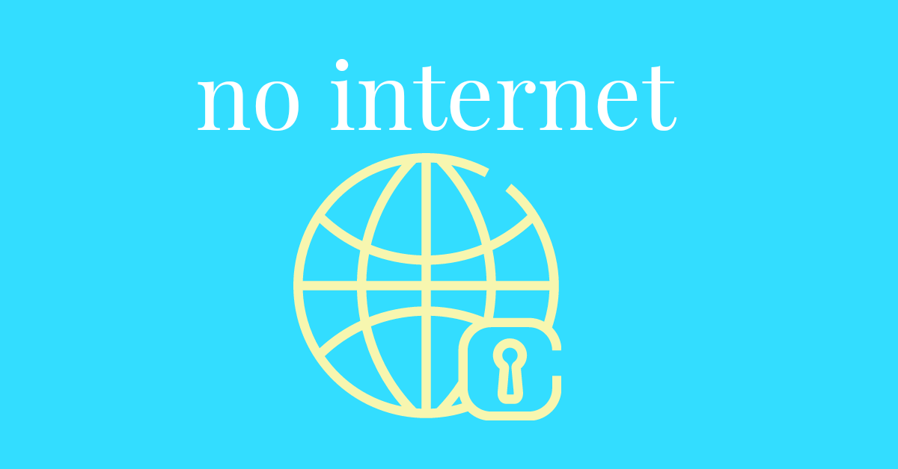
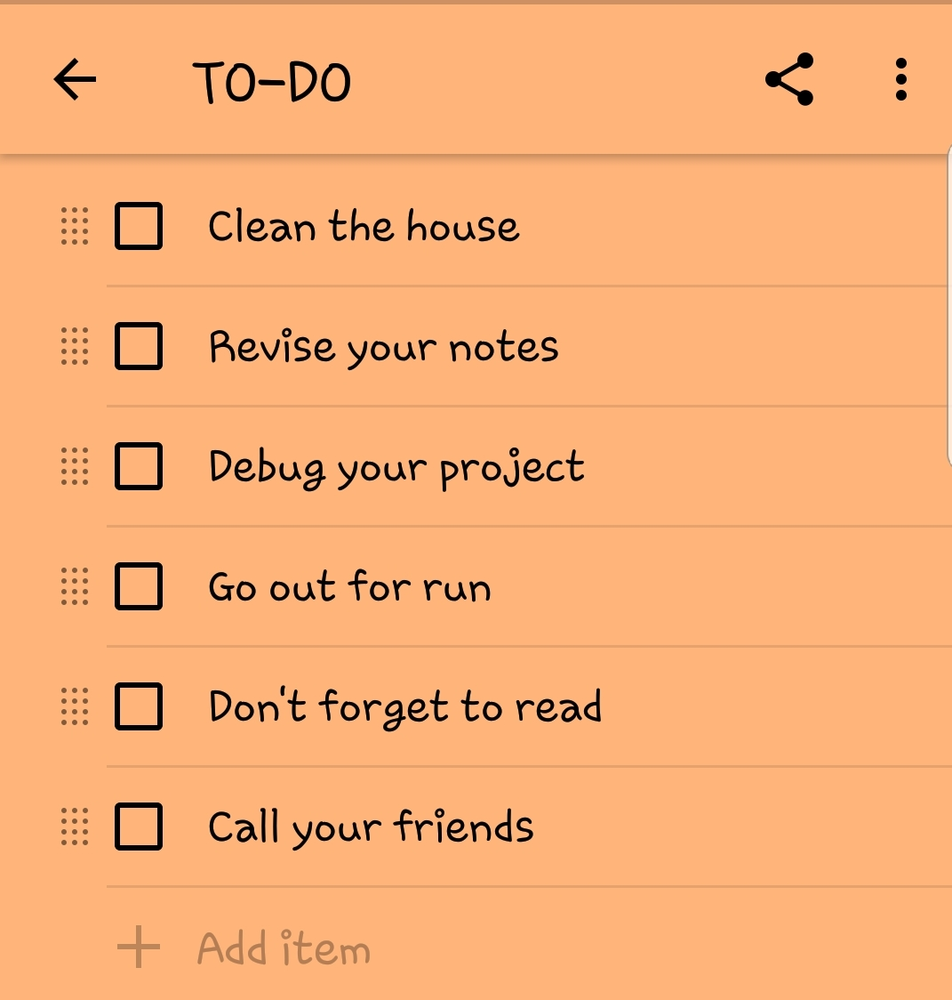

March 22, 2021
A day without internet
Living without the internet, for an online creature like us, is difficult but not impossible. Think about going on a camping trip, you often don't have phone signals in those areas. Then you can't use the internet. I know you may say, it's not by choice but what if I tell you that you can spend a day without craving to be online? If I can do it, so can you.

Let me tell you first how I planned my internet-free day.
I operate by creating a to-do list every day, meaning my day starts with a to-do list, which I always create a day before.
How did I plan my to-do list for the targeted day?
I plan a lengthy one, not really. Instead of adding my usual 3 to 4 activity, I added more than that for the day. I have shared a screenshot of my to-do list for that day.

I woke up at 6'o o'clock in the morning. And as a creature of habit, my hand moves toward my phone to browse it but then I remember that it is a non-online day for me. So I checked out my list for the day. It's necessary to plan out your time so that you don't scrum to your desire for browsing. Until 8 in the morning, I did exercise and reading (a paperback book) in the morning. I often read mystery books more than other genres. Then, I made my breakfast and ate it. It was 8:40 at the time and I still had a whole day to spend while being productive. So, I started with my first work on the list. I began cleaning. Every corner of the house was shining after I finish (Mom was really happy to see me helping her without being told 😅). Then I sat down to study. I am still a beginner in programming and since it was an internet-free day, I read my notes and practised whatever I have learned so far. It was 1:17 pm when I got up to have lunch. After lunch, I went to take a nap, which lasted for almost two hours. My digital clock was telling me it was 3:45 pm. Still, I wasn't feeling like going online and browsing. I call my friends who I haven't talked to for a long time. Then I watched some t.v. and went out to run. It was almost 7 when I came back. I took a quick bath and had dinner with my family. It was the first time when I didn't have my smartphone with me while having a meal. I went to bed early that day.
This is how I spend my internet-free day. You can plan your own however way you want.
Benefits?
- You spend more time with your family.
- You can do your pending work.
- You are more conscious of your surroundings.
Tip: Before you start, plan a reward for yourself. Your brain has to know that it will receive something after the successful completion of the challenge. I rewarded myself the next day.